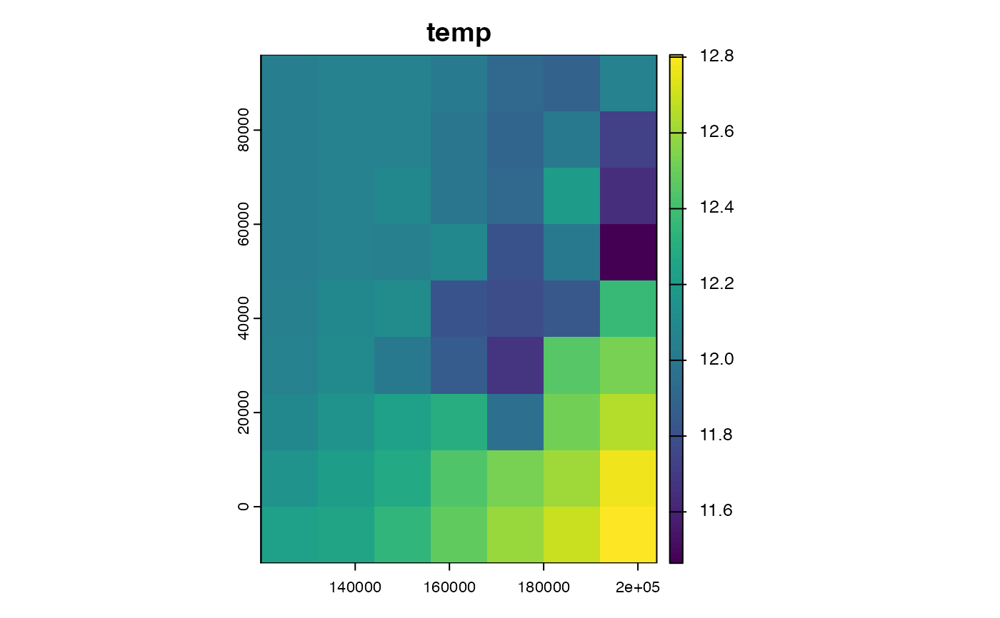
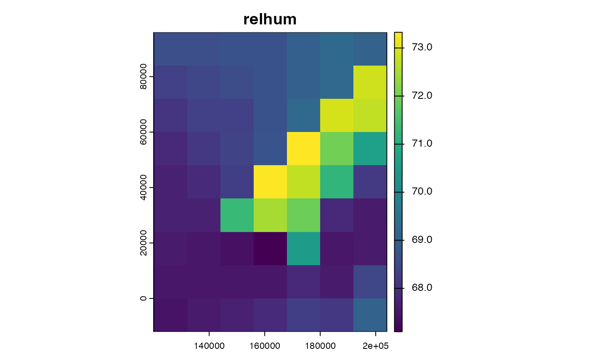
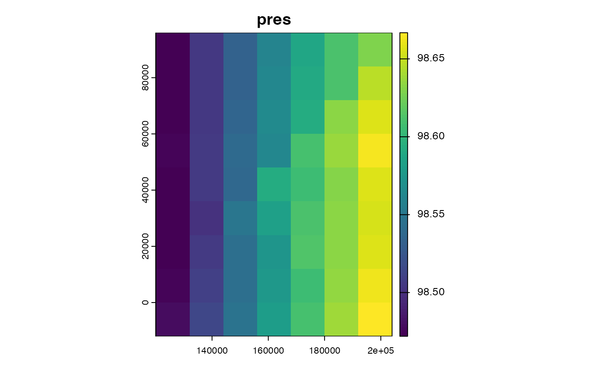
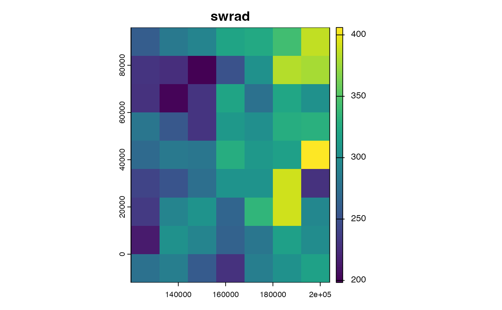
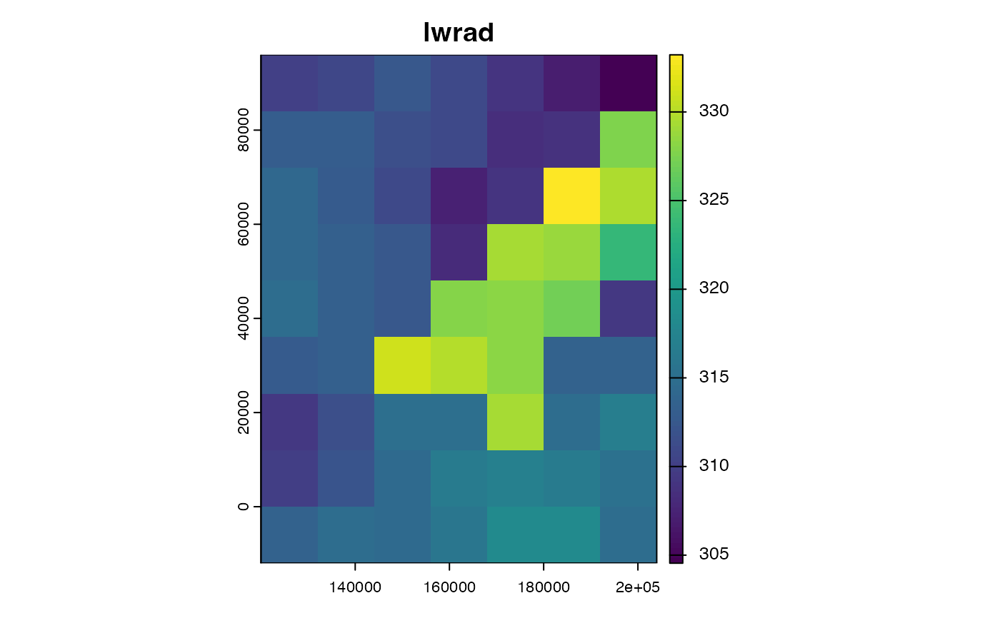
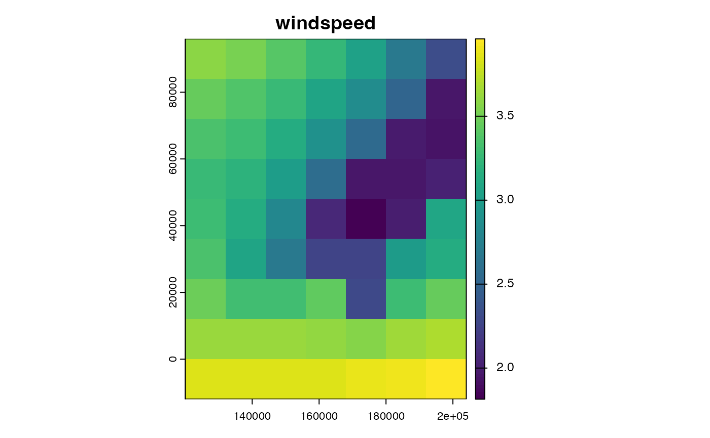
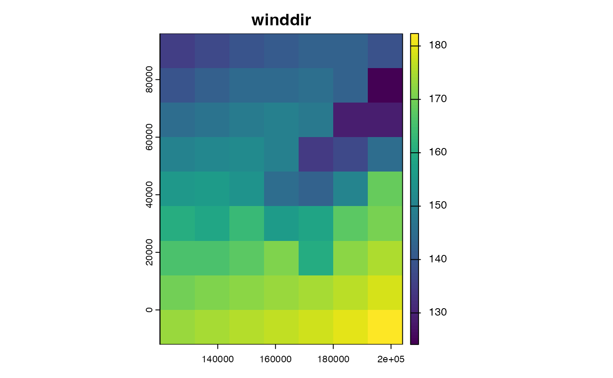
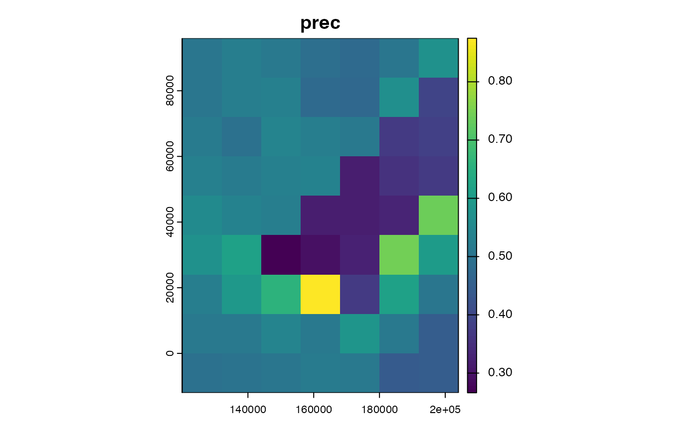

Downscale daily climate data to hourly
Usage
temporaldownscale(
climdaily,
adjust = TRUE,
clearsky = NA,
srte = 0.09,
relmin = 10,
noraincut = 0,
toArrays = FALSE
)Arguments
- climdaily
list of daily climate variables, dtm etc as output by
ukcp18toclimarray
- adjust
to adjust hourly values fo mean = daily mean
- clearsky
clearsky values for terrain (see
swrad_dailytohourly)
- srte
a parameter controlling speed of decay of night time temperatures (see
temp_dailytohourly)
- relmin
minimum relative humidity value (see
hum_dailytohourly)
- noraincut
single numeric value indicating daily rainfall amounts that should be considered as no rain (see)
- toArrays
if FALSE outputs SpatRasters
Value
a list of spatRasters or 3D arrays of hourly climate variables in same format as input climdaily
Examples
climdaily<-read_climdata(mesoclim::ukcpinput)
allhrly<-temporaldownscale(climdaily, adjust = TRUE, clearsky=NA, srte = 0.09, relmin = 10, noraincut = 0)
for(n in 5:length(allhrly)) terra::plot(allhrly[[n]][[12]],main=names(allhrly)[n])







